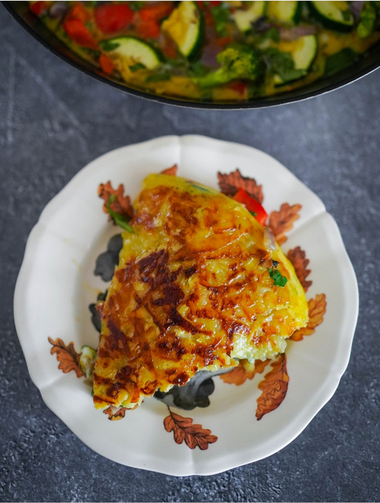

Картофель — вещь в европейской и русской кухне в историческом плане сравнительно недавняя, но уже невозможно представить жизнь без него! В любой европейской и в целом в западной кухне есть знаковые блюда из картофеля: французский гратен и картофель дофинуа, испанская тортилья, «визитная карточка» британской кухни фиш-энд-чипс, украинские картопляники, немецкий картофель пуффер с яблочным соусом, карибское блюдо папа рейена, канадский путин (не путать ударение!), литовские цеппелины, швейцарские рёшти, ирландский колканнон, американские хашбраун... А белорусская кухня? В ней картошка не просто один из любимых продуктов, это основа основ!
Несмотря на кажущуюся простоту и доступность, это очень разносторонний овощ, который может менять текстуру и вкус до неузнаваемости, в зависимости от способа приготовления: хрустящий фри, нежное пюре, почти желеобразная нежность в гратене.
При покупке картошки обращайте внимание на следующие моменты: лучше, если клубни будут примерно равного размера, так картошку удобнее обрабатывать и готовить; мелкие клубни подойдут для запекания или жарки целиком, крупные — для нарезки картофеля фри и для варки, средние — для всех остальных случаев; кожица на клубнях не должна быть повреждена, без вмятин, тёмных пятен и наростов; ни в коем случае клубни не должны быть зеленоватыми (зелёный цвет придаёт ядовитый алкалоид соланин); клубни должны быть очень твёрдыми; картошка должна быть сухой, не влажной; у картошки не должно быть запаха.
Важнее всего определить тип картофеля по его крахмалистости, потому что это напрямую влияет на текстуру готовящихся из него блюд.
Чтобы определить тип картофеля, можно провести тест на плотность: вам понадобится 11%-ный раствор соли (110 г соли на 1 литр воды). Та картошка, что камнем упадёт на дно — с самым высоким содержанием крахмала, идеальна для пюре. Та, что будет плавать, как поплавок — содержит минимум крахмала, отлично держит форму в салатах. Ну, а та, что где-то посередине — универсальный сорт со средним содержанием крахмала.
Другой способ, проще и быстрее — разрезать клубень и оценить состояние лезвия ножа. Если следов крахмала на нём почти нет — картошка не крахмалистая, если есть, но немного — среднее содержание; если чётко виден крахмал — крахмалистый сорт.
По собственному опыту: жёлтая картошка с гладкой кожицей — среднее содержание крахмала; жёлтая с очень шершавой, будто полопавшейся кожицей — крахмалистая; красная с белой мякотью — скорее, салатная; красная с жёлтой мякотью — средняя, но стремящаяся к крахмалистой.
Варка. Можно варить картофель очищенный и в мундире (неочищенный). Для пюре картофель нужно очистить под проточной водой и крупно нарезать. Картофель относится к тем немногим овощам, которые можно класть для варки в холодную, а не в горячую воду. Варить нужно при очень слабом кипении до мягкости, в среднем от 15 до 20 минут. Если вы варите очищенный картофель для пюре, подсолите воду, а в конце, выключив огонь, сразу слейте её через дуршлаг и дайте картошке обсохнуть в нём, чтобы максимально удалить остатки жидкости.
Приготовление пюре. Отварную или запечённую картошку пропустить через пресс (в идеале) или размять толкушкой, добавить сливочное масло и влить подогретое (обязательно тёплое, не холодное!) молоко. Особенно вкусным получается пюре из запечённой в мундире картошки.
Запекание. Идеальный способ приготовить картошку не только для гарнира, но и для салатов и даже пюре. Рекомендуется запекать картофель в толстостенной чугунной кастрюле под крышкой для равномерного прогрева и распределения тепла, но можно запекать просто в духовке при 180–190 °С (356–374 °F) от 40 минут до 1 часа, в зависимости от размера клубней. Отличный вариант — запечь картошку в той же форме, что и основное белковое блюдо.
Жарка. Для жарки картошки идеально подходит чугунная сковородка: её нужно хорошо разогреть, влить масло, выложить нарезанную картошку невысоким слоем, и жарить, не тревожа, пока снизу не образуется поджаристая золотистая корочка. Аккуратно перевернуть и пожарить с другой стороны, посолив примерно в середине процесса (то, что жареную картошку солить нужно в самом конце — распространённый кулинарный миф).
Картошка фри. Нарезать очищенную картошку крупными брусочками, промыть под проточной водой, чтобы смыть крахмал, и обсушить на бумажных полотенцах. Отварить до полуготовности в подсоленной воде, 10–12 минут. Слить воду, остудить, накрыть плёнкой и поместить в холодильник, чтобы картошка стала холодной. Разогреть масло для фритюра до 140 °С (284 °F) и жарить картошку до очень светлого золотистого оттенка, буквально 2–3 минуты. Достать и обсушить на бумажных полотенцах. Последний этап: разогреть масло для фритюра до 180 °С (356 °F) и жарить картошку 4–5 минут до выраженного золотистого цвета, после чего быстро обсушить на бумажных полотенцах и подавать горячей.
Картошка фрайт (бонус). Очень интересная и малоизвестная техника приготовления картофеля в гипертоническом соляном растворе, при которой он никогда не лопается и не разваривается, а получается на вкус как печёный. Пропорции воды и соли примерно 350 г соли на 1 л воды. Выложить в кастрюлю картофель и довести до слабого кипения. Неплотно накрыть крышкой и варить около 20 минут для средних по размеру клубней, в процессе пару раз перевернув картофелины (в такой солёной воде они сразу всплывут). Достать клубни, промыть и очистить. Сама картошка при таком способе варки солёной не становится. Кстати, хорошо обсохшую картошку в соляной корочке (без промывания) удобно брать с собой, если нет холодильника: она спокойно сохранится 2–3 дня. Соляной раствор не выливайте, его можно использовать повторно сколько угодно раз.
Картофель — один из немногих продуктов, которые не переносят хранение в холодильнике. Под влиянием низкой температуры содержащийся в нём крахмал превращается в сахар, и картофель становится неприятно сладким. Потому хранить его нужно в прохладном (желательно не выше 12 °С), сухом и тёмном месте, обязательно вдали от прямого солнечного света, под влиянием которого клубни зеленеют, и в них образуется ядовитый соланин.
Картофель можно хранить вместе со свёклой, и это даже полезно для обоих овощей: свёкла поглощает выделяемую картофелем влагу. А вот от лука нужно его держать подальше: луковые фитонциды провоцируют его прорастание.
Проще всего не закупать картошку впрок, а приобретать под конкретное блюдо столько, сколько необходимо.
Ароматное картофельное пюре с чесночным маслом от Йотама Оттоленги. В большой кастрюле соединить 1 кг очищенного картофеля, 5–6 веточек тимьяна, 3 веточки мяты, 4 очищенных зубчика чеснока, 3–4 длинные полоски лимонной цедры и 2 ч. л. соли. Залить водой, чтобы она покрыла картофель, и варить около 20 минут, до мягкости картошки. Удалить тимьян и мяту, а чеснок и лимонную цедру оставить. Слить воду (сохранив около 120 мл) и обсушить картофель в дуршлаге. Сделать чесночное масло: перемешать в миске 60 мл оливкового масла с измельчённым зубчиком чеснока, по паре чайных ложек рубленых листочков тимьяна и мяты, а также 1 столовой ложкой мелко натёртой лимонной цедры. Размять картошку в пюре, добавить 100 мл оливкового масла и сохранённую от варки воду, перемешать. При подаче полить чесночным маслом и хорошо поперчить.
Зимний картофельный суп от Найджела Слейтера. Промыть и нарезать 2–3 крупных белых стебля лука-порея, потомить под крышкой в сотейнике на 40 г сливочного масла около 20 минут, время от времени помешивая. Нарезать 3 средние картофелины тонкими кружочками, добавить к луку, готовить 5 минут. Положить в сотейник пару-тройку корок от пармезана, влить 1,5 литра любого лёгкого бульона, посолить, поперчить и готовить под крышкой около 40 минут. Удалить сырные корки, сняв с них остатки сыра, и добавить горсть рубленой петрушки. Измельчить блендером и подавать, посыпав тёртым пармезаном.
Давленый жареный картофель от Джошуа Макфаддена. Запечь в духовке мелкий среднекрахмалистый картофель (700 г) около 30 минут, до мягкости. Немного остудить и слегка раздавить тяжёлым дном ковша или ладонью, чтобы сплющить его: чем больше будет трещин, тем более хрустящим станет готовый картофель. В большой сковородке разогреть слой оливкового масла высотой около 1,5 см. Обжарить раздавленные картофелины до румяной корочки с обеих сторон (если картошки много, жарить партиями), всего около 5 минут, добавив в масло за 30 секунд до окончания жарки горсть тонких ломтиков чеснока, листочков тимьяна и розмарина. При подаче посыпать хлопьями чили, дополнить дольками лимона.